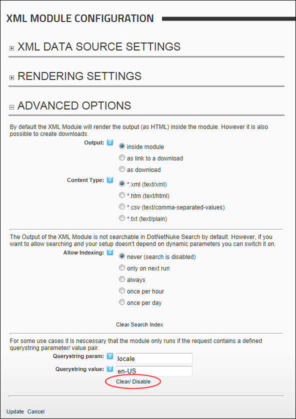

Managing Query String Parameter/Value Pair
How to clear or disable a defined query string parameter/value pair that is required for the XML/XSL module.
- Select
 Edit Module Configuration from the XML/XSL module actions menu. This opens the XML Module Configuration page.
Edit Module Configuration from the XML/XSL module actions menu. This opens the XML Module Configuration page.
- Maximize
 the Advanced Options section.
the Advanced Options section.
- Click the Clear/Disable link.
